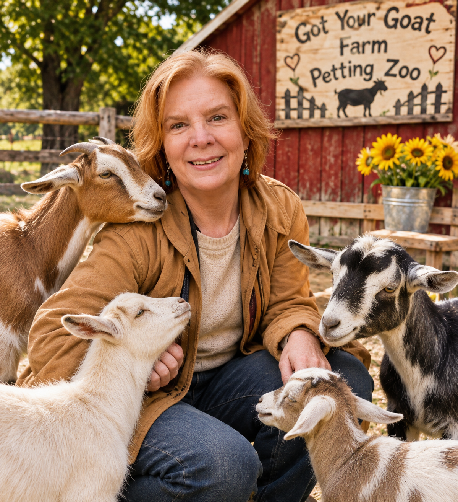
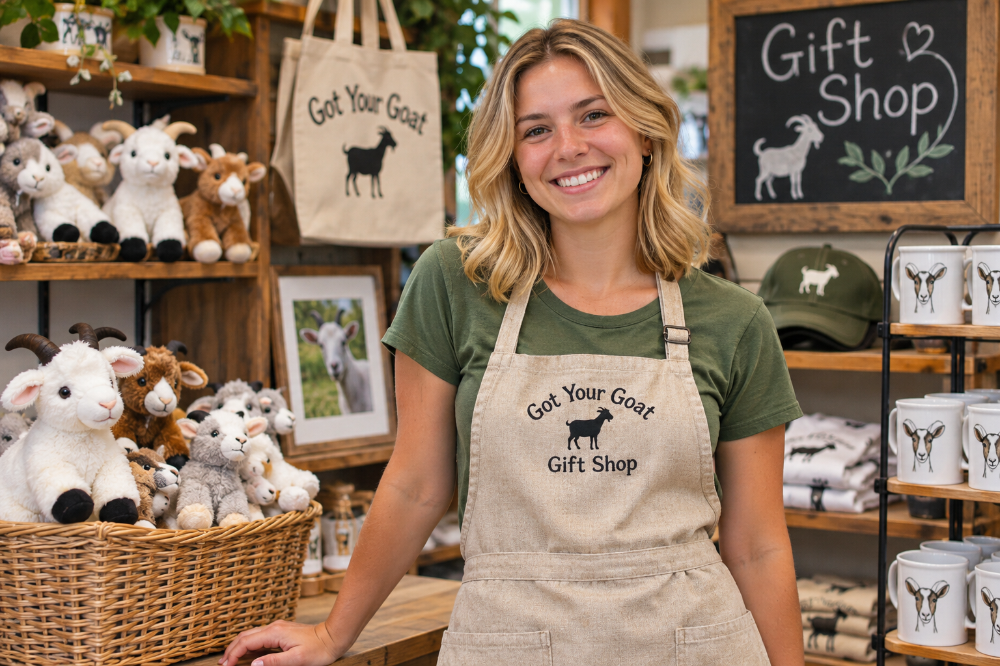
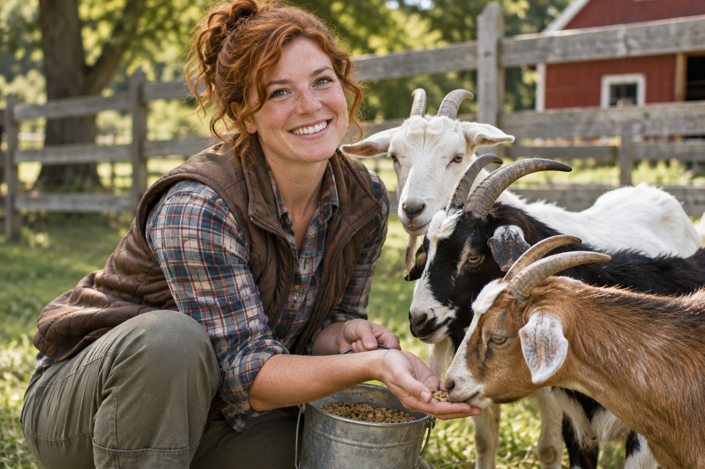
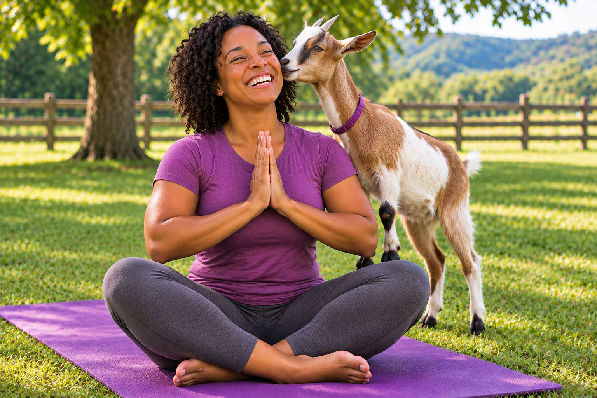

About Got Your Goat Farm and Sanctuary
Hello and welcome to Got Your Goat Farm and Sanctuary. We are a working farm that provides a loving home for our goats. We have many activities and programs for the public to learn and interact with our animals.

About the owner
Mary McCarthy
I always had a great love of nature and animals. I had a special fondness for goats. They are surprisingly friendly animals.
Learn more about our farmMeet Our Team
Our farm cannot run without our valuable team.

Sarah
Gift Store manager
Sarah is our gift store manager who sells entry tickets and store items.

Olivia
Farm Care
Olivia helps with the care of our goats.

Jasmine
Yoga Instructor
Jasmine has been a professional yoga instructor for 5 years before she discovered
that having goats help with her class.